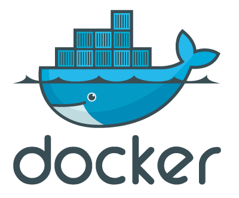

Docker : manage LXC containers easily with advanced features
Contents
|  | |
| Software version | 0.11.1 |
|---|---|
| Operating System | Debian 8 |
| Website | Docker Website |
| Last Update | 09/07/2014 |
| Others | |
{kind=link}
1 Introduction
Docker[1] is an open-source engine that automates the deployment of any application as a lightweight, portable, self-sufficient container that will run virtually anywhere.
Docker containers can encapsulate any payload, and will run consistently on and between virtually any server. The same container that a developer builds and tests on a laptop will run at scale, in production*, on VMs, bare-metal servers, OpenStack clusters, public instances, or combinations of the above.
Common use cases for Docker include:
- Automating the packaging and deployment of applications
- Creation of lightweight, private PAAS environments
- Automated testing and continuous integration/deployment
- Deploying and scaling web apps, databases and backend services
In short, Docker needs a kernel version 3.8 or above to get AUFS support. This is needed for version < 0.7 as it uses AUFS. In 0.7 version AUFS support will be replaced by Device Mappers to avoid having a recent Linux kernel version.
2 Installation
The problem on Debian with the package, is there is an already existing package called docker. That's why you need to install docker.io:
| |
aptitude install docker.io lxc |
And to make it simpler, set an alias or create a symlink from 'docker.io' to 'docker'.
If you want the latest version, this this a single binary:
| |
wget https://get.docker.io/builds/Linux/x86_64/docker-latest -O /usr/bin/docker chmod 755 /usr/bin/docker |
3 Configuration
3.1 LXC
We will need to make some change regarding the boot of the machine to enable memory managment in the containers by adding 'cgroup_enable' and 'swapaccount' parameters:
| |
GRUB_CMDLINE_LINUX_DEFAULT="quiet cgroup_enable=memory swapaccount=1" |
Then update grub and reboot your machine:
| |
update-grub reboot |
3.2 Docker
If you want to change the destination directory where dockers containers will be stored, you simply can use -g option. If you installed with the package, you can modify that parameter here:
| |
[...] DOCKER_OPTS="-g /home/pmavro/.docker" [...] |
Here, I can see the folder where I store my docker images and containers.
4 Usage
Now you're ready for the usage. We'll see here the basics and some interesting usages.
4.1 Get images
The first things to do is to get the wanted images you want to work with:
| |
docker pull debian docker pull ubuntu docker pull centos |
Here I download Centos and Debian.
4.2 List images
You can now list available images like that:
| |
> docker images REPOSITORY TAG IMAGE ID CREATED VIRTUAL SIZE debian latest e565fbbc6033 4 weeks ago 115 MB debian 7.4 e565fbbc6033 4 weeks ago 115 MB debian wheezy e565fbbc6033 4 weeks ago 115 MB debian 6.0.9 bc3c71bec50b 4 weeks ago 112.3 MB debian squeeze bc3c71bec50b 4 weeks ago 112.3 MB debian jessie 4bd7c3e53dc0 4 weeks ago 120.9 MB debian testing ecd2aa2561ea 4 weeks ago 120.9 MB debian sid 1cda8535c670 4 weeks ago 122.7 MB debian oldstable 2cdcb7d79857 4 weeks ago 112.4 MB debian experimental df8f36b7b798 4 weeks ago 159.2 MB debian rc-buggy 85f0637e82fc 4 weeks ago 159.2 MB debian unstable e5c43625d004 4 weeks ago 122.7 MB centos centos6 0b443ba03958 5 weeks ago 297.6 MB centos latest 0b443ba03958 5 weeks ago 297.6 MB debian stable d8309758b8fe 6 weeks ago 115 MB debian 6.0.8 d56191e18d6b 3 months ago 113.1 MB debian 7.3 b5fe16f2ccba 3 months ago 117.7 MB centos 6.4 539c0211cd76 13 months ago 300.6 MB [...] |
4.3 Launch a container
When you want to start a container:
| |
> docker run -i -t debian bash root@509d83d55238:/# exit |
- -i: Keep STDIN open
- -t: Allocate a psuedo-TTY
You can exit a container with exit.
4.4 List containers
You can list running containers:
| |
> docker ps CONTAINER ID IMAGE COMMAND CREATED STATUS PORTS NAMES |
And to list running and stopped containers:
| |
> docker ps -a CONTAINER ID IMAGE COMMAND CREATED STATUS PORTS NAMES 509d83d55238 debian:7.4 /bin/bash 3 minutes ago Exited (0) 3 minutes ago distracted_lalande |
4.5 Start container
If a container is stopped, you can easily start it with container ID:
| |
> docker start 509d83d55238 509d83d55238 |
Then you can see it:
| |
> docker ps CONTAINER ID IMAGE COMMAND CREATED STATUS PORTS NAMES 509d83d55238 debian:7.4 /bin/bash 5 minutes ago Up 5 seconds distracted_lalande |
4.6 Connect to a container
To connect to a started container, you need to attach to it:
| |
> docker attach 509d83d55238 root@509d83d55238:/# |
4.7 Commit changes
Now comes interesting things. You can commit changes you've made on a container. That will help you to easily roll back changes for example. So let's install vim or anything to make changes and then commit:
| |
> docker commit 509d83d55238 deimosfr/tests 48d436fd27903337c79fca6738f7702ea0eec4304fd0cbd5ebea95854bc9f94e |
- 509d83d55238: the container ID on which you want to commit (get it with 'docker ps -a' command)
- deimosfr/tests: the name of the commit
Now if you look at the current available images, you'll see your new one:
| |
> docker images REPOSITORY TAG IMAGE ID CREATED VIRTUAL SIZE deimosfr/tests latest 48d436fd2790 2 minutes ago 170 MB |
4.8 Diff changes
You can see a diff between a commited version and the changes you've made like that:
| |
> docker diff 509d83d55238 A /etc/alternatives/vi A /etc/vim A /etc/vim/vimrc C /usr C /usr/bin A /usr/bin/editor A /usr/bin/vi A /usr/bin/view A /usr/bin/vim A /usr/bin/vim.basic A /usr/share/bug/vim/script A /usr/share/doc/vim [...] |